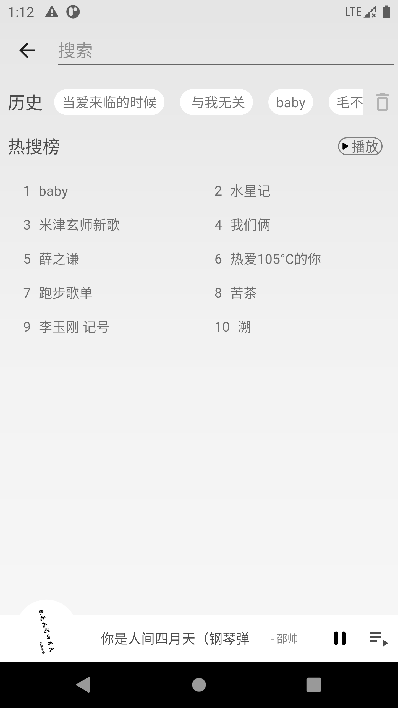
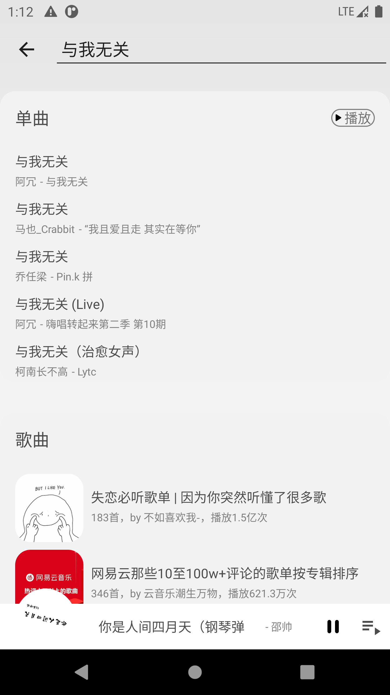

搜索没有打算用Fragment，而是新增了一个Activity实现，起先一直想通过SearchView来作为搜索框，但样式一直都改不到和网易云一样，后面是用EditText来实现
预览 先上效果图


搜索框 搜索框其实是有两个，一个是在“发现”页中点击跳转的控件，另一个就是跳转之后的搜索框
发现中的是将一个TextView放置在Toolbar中来实现的
1 2 3 4 5 6 7 8 9 10 11 12 13 14 15 16 17 18 19 20 21 <androidx.appcompat.widget.Toolbar android:id ="@+id/toolbar" android:layout_width ="match_parent" android:layout_height ="?attr/actionBarSize" android:background ="?attr/colorPrimary" app:navigationIcon ="@drawable/ic_menu_24" app:popupTheme ="@style/Theme.NeteaseCloudMmusic.PopupOverlay" > <androidx.appcompat.widget.AppCompatTextView android:id ="@+id/search" android:layout_width ="wrap_content" android:layout_height ="wrap_content" android:background ="@drawable/corner_circle" android:backgroundTint ="@color/white85" android:drawableStart ="@drawable/ic_search" android:drawablePadding ="16dp" android:gravity ="center_vertical" android:minWidth ="240dp" android:padding ="8dp" android:text ="搜索" /> </androidx.appcompat.widget.Toolbar >
真正的搜索框是EditText的演变ClearableEditText，这里需要将输入框修正为actionSearch，响应的时候就可以直接监听事件
1 2 3 4 5 6 7 8 9 10 11 12 13 14 15 16 17 18 <androidx.appcompat.widget.Toolbar android:id ="@+id/toolbar" style ="@style/Toolbar.Style" android:layout_width ="match_parent" android:layout_height ="?attr/actionBarSize" android:background ="?attr/colorPrimary" app:layout_scrollFlags ="noScroll|enterAlways" app:popupTheme ="@style/Theme.NeteaseCloudMmusic.PopupOverlay" > <com.xuie0000.netease.cloud.widget.ClearableEditText android:id ="@+id/search" android:layout_width ="match_parent" android:layout_height ="wrap_content" android:hint ="搜索" android:imeOptions ="actionSearch" android:maxLines ="1" android:singleLine ="true" /> </androidx.appcompat.widget.Toolbar >
响应事件EditorInfo.IME_ACTION_SEARCH
1 2 3 4 5 6 7 8 9 10 binding.search.setOnEditorActionListener { v, actionId, event -> Timber.d("search action id: $actionId , event: $event " ) when (actionId) { EditorInfo.IME_ACTION_SEARCH -> { search() true } else -> false } }
ClearableEditText的实现
ClearableEditText是我以前看博文记下的忘记哪位大能写的了。。。搜索了一下文章也无踪迹
1 2 3 4 5 6 7 8 9 10 11 12 13 14 15 16 17 18 19 20 21 22 23 24 25 26 27 28 29 30 31 32 33 34 35 36 37 38 39 40 41 42 43 44 45 46 47 48 49 50 51 52 53 54 55 56 57 58 59 60 61 62 63 64 65 66 67 68 69 70 71 72 73 74 75 76 77 78 79 80 81 82 83 84 85 86 87 88 class ClearableEditText : AppCompatEditText , View.OnTouchListener , View.OnFocusChangeListener , TextWatcher { private lateinit var mClearTextIcon: Drawable private var mOnFocusChangeListener: OnFocusChangeListener? = null private var mOnTouchListener: OnTouchListener? = null constructor (context: Context) : super (context) { init (context) } constructor (context: Context, attrs: AttributeSet) : super (context, attrs) { init (context) } constructor (context: Context, attrs: AttributeSet, defStyleAttr: Int ) : super (context, attrs, defStyleAttr) { init (context) } override fun setOnFocusChangeListener (onFocusChangeListener: OnFocusChangeListener ) mOnFocusChangeListener = onFocusChangeListener } override fun setOnTouchListener (onTouchListener: OnTouchListener ) mOnTouchListener = onTouchListener } private fun init (context: Context ) val drawable = ContextCompat.getDrawable(context, R.drawable.ic_close_24) val wrappedDrawable = DrawableCompat.wrap(drawable!!) DrawableCompat.setTint(wrappedDrawable, currentHintTextColor) mClearTextIcon = wrappedDrawable mClearTextIcon.setBounds(0 , 0 , mClearTextIcon.intrinsicHeight, mClearTextIcon.intrinsicHeight) setClearIconVisible(false ) super .setOnTouchListener(this ) super .setOnFocusChangeListener(this ) addTextChangedListener(this ) } override fun onFocusChange (view: View , hasFocus: Boolean ) if (hasFocus) { setClearIconVisible(text?.isNotEmpty() ?: false ) } else { setClearIconVisible(false ) } mOnFocusChangeListener?.onFocusChange(view, hasFocus) } override fun onTouch (view: View , motionEvent: MotionEvent ) Boolean { val x = motionEvent.x.toInt() if (mClearTextIcon.isVisible && x > width - paddingRight - mClearTextIcon.intrinsicWidth) { if (motionEvent.action == MotionEvent.ACTION_UP) { error = null setText("" ) } return true } return mOnTouchListener?.onTouch(view, motionEvent) ?: false } override fun onTextChanged (s: CharSequence , start: Int , before: Int , count: Int ) if (isFocused) { setClearIconVisible(s.isNotEmpty()) } } override fun beforeTextChanged (s: CharSequence , start: Int , count: Int , after: Int ) override fun afterTextChanged (s: Editable ) private fun setClearIconVisible (visible: Boolean ) mClearTextIcon.setVisible(visible, false ) val compoundDrawables = compoundDrawables setCompoundDrawables( compoundDrawables[0 ], compoundDrawables[1 ], if (visible) mClearTextIcon else null , compoundDrawables[3 ]) } }
页面布局 布局可以看到有两个不同的Layout，这里没有使用Fragemnt或其他感知控件，就是普通的两个View之间切换 - -
1 2 3 4 5 6 7 8 9 10 11 12 13 14 15 private fun showSearchResult (visible: Boolean ) Timber.d("visible: $visible " ) binding.apply { rvList.isVisible = visible hot.root.isVisible = !visible history.root.isVisible = !visible } if (visible) { searchViewClearFocus() } } private val isShowingSearchResult: Boolean get () = binding.rvList.visibility == View.VISIBLE
如果有人有不一样的想法感谢留言！
参考 https://developer.android.com/guide/topics/search/search-dialog